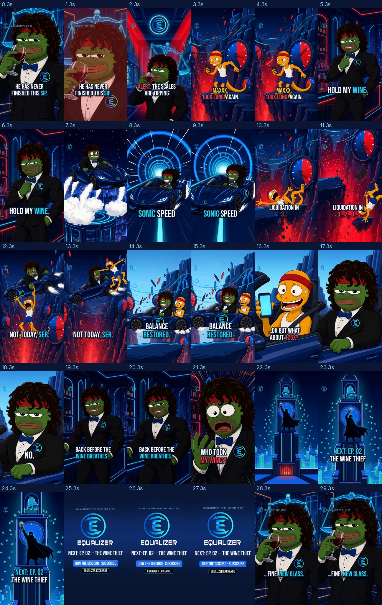
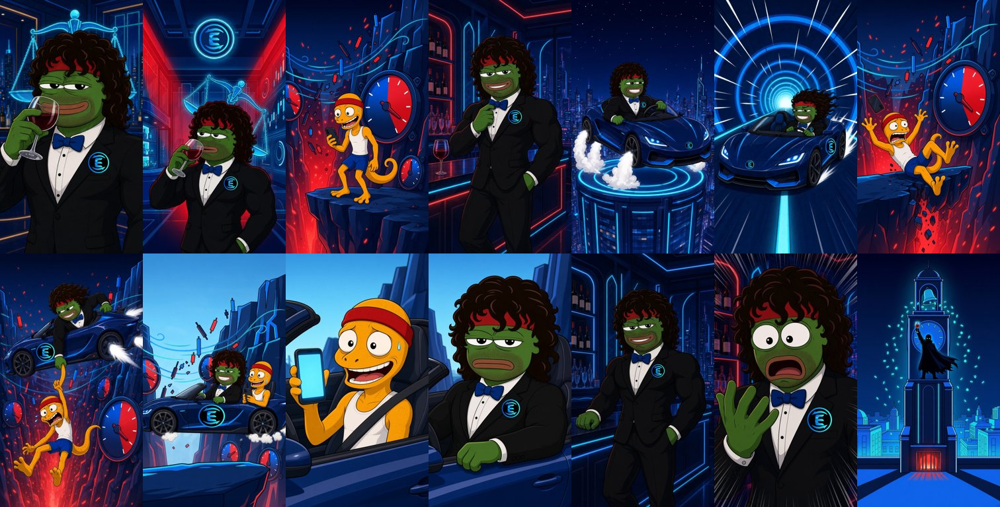
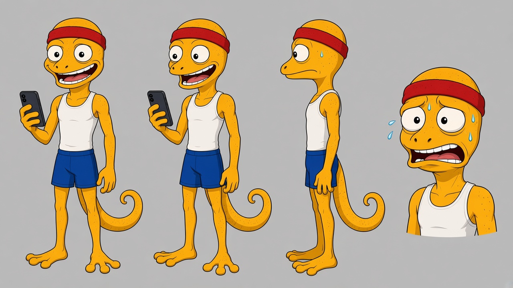

Equalizer Pepe — EP. 01 “NO TIME TO SIP”
30.0s · 9:16 · 1080×1920 · 30fps · H.264 + AAC · 25.5 MB · 22 Oct 2026 (AEDT)
Story
1. Pepe's wine touches his lips — DING — the Scales tip: Maxxx the 100x gecko is about to get liquidated off Liquidation Cliffs.
2. “Hold my wine.” Roadster launch → Sonic Warp Tunnel → one-handed catch over the red abyss. Balance restored. Maxxx: “…ok but what about 125x?” Pepe: “No.”
3. Back at HQ he reaches for the glass… gone. A caped silhouette toasts with it from the Epoch Clock Tower. NEXT: EP. 02 — THE WINE THIEF. Stinger: “…fine. new glass.” lands on the opening frame, so it loops.
1. Pepe's wine touches his lips — DING — the Scales tip: Maxxx the 100x gecko is about to get liquidated off Liquidation Cliffs.
2. “Hold my wine.” Roadster launch → Sonic Warp Tunnel → one-handed catch over the red abyss. Balance restored. Maxxx: “…ok but what about 125x?” Pepe: “No.”
3. Back at HQ he reaches for the glass… gone. A caped silhouette toasts with it from the Epoch Clock Tower. NEXT: EP. 02 — THE WINE THIEF. Stinger: “…fine. new glass.” lands on the opening frame, so it loops.
Shot list
| # | Time | Shot | Method |
|---|---|---|---|
| S01 | 0.0–1.5 | Hook: sip close-up, DING + red flash. “HE HAS NEVER FINISHED THIS SIP.” | still + push |
| S02 | 1.5–3.0 | Scales tip, red alarm. “ALERT: THE SCALES ARE TIPPING” | Kling |
| S03 | 3.0–4.7 | Maxxx on the ledge. “MAXXX. 100x LONG. AGAIN.” | Kling |
| S04 | 4.7–6.4 | Glass on the bar, bow-tie fix. “HOLD MY WINE.” | Kling |
| S05 | 6.4–8.2 | Roadster launch, air-thruster bursts | Kling |
| S06 | 8.2–10.0 | Warp tunnel. “SONIC SPEED” | Kling + push |
| S07 | 10.0–11.6 | Ledge crumbles, Maxxx falls. “LIQUIDATION IN 3… 2… 1…” | Kling |
| S08 | 11.6–13.8 | One-handed catch and fling. “NOT TODAY, SER.” | Kling |
| S09 | 13.8–16.0 | Door badge to camera (real icon.png). “BALANCE RESTORED.” | still + push |
| S10 | 16.0–17.3 | Maxxx: “…OK BUT WHAT ABOUT 125x?” | still + push |
| S11 | 17.3–18.6 | Pepe deadpan: “NO.” | still |
| S12 | 18.6–20.6 | Reaches for the glass without looking. “BACK BEFORE THE WINE BREATHES…” | Kling |
| S13 | 20.6–22.0 | Shock. “WHO TOOK MY WINE?!” | still + shake |
| S14 | 22.0–24.5 | Caped thief toasts on the Clock Tower. “NEXT: EP. 02 THE WINE THIEF” | Kling + push |
| S15 | 24.5–27.5 | End card: logo-01-white-text on #0A1633 · JOIN THE DISCORD · SUBSCRIBE · EQUALIZER.EXCHANGE | PIL |
| S16 | 27.5–30.0 | “…FINE. NEW GLASS.” Push lands on frame 1 → loop | still + push |
Contact sheet (1 frame / second)

Start-frame plates (real icon.png composited)

New cast: Maxxx the 100x gecko

Cost
9 × Kling 2.6 Pro image-to-video at 0.156 USDC = 1.404 USDC (cap 3.00). PZERO balance 11.484154 → 10.080154 USDC. Plates (GenerateImage): free. Sound is synthesized in code: no samples, no music licences.
Brand
Every readable logo is the official icon.png composited in post (lapel pins, car nose/door badges, HQ wall badge). There's a corner watermark on every frame, and the end card uses logo-01-white-text. All text is PIL in Bebas Neue / Inter. No prices, APRs or promises; “100x/125x” is the fictional gecko's leverage gag.